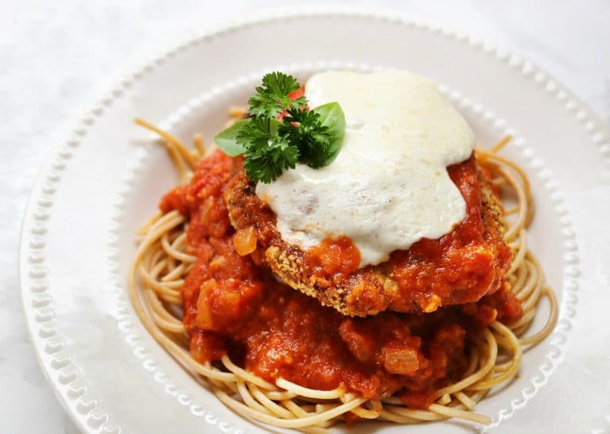

Chicken Parmesan

Description
A classic Italian inspired dish that is welcome at any dinner table, chicken parmesan
will satisfy almost any hungry guest. This recipe stays true to the dish with simple
ingredients and a flavor to live for! Consisting of a prep time of twenty-five minutes, and
a cook time of twenty minutes, you can quickly and easily put together a master dish
fit for any home chef's dinner table.
Ingredients
- 4 skinless, boneless chicken breast halves
- salt and freshly ground black pepper to taste
- 2 eggs
- 1 cup panko bread crumbs
- 1/2 cup grated Parmesan cheese
- 2 tablespoons all-purpose flour
- 1 cup olive oil for frying
- 1/2 cup prepared tomato sauce
- 1/4 cup fresh mozzarella, cut into small cubes
- 1/4 cup chopped fresh basil
- 1/2 cup grated provolone cheese
- 1/4 cup grated Parmesan cheese
- 1 tablespoon olive oil
Steps
- Preheat an oven to 450 degrees F (230 degrees C).
-
Place chicken breasts between two sheets of heavy plastic
(resealable freezer bags work well) on a solid, level surface.
Firmly pound chicken with the smooth side of a meat mallet to a thickness of 1/2-inch.
Season chicken thoroughly with salt and pepper.
- Beat eggs in a shallow bowl and set aside.
- Mix bread crumbs and 1/2 cup Parmesan cheese in a separate bowl, set aside.
- Place flour in a sifter or strainer; sprinkle over chicken breasts, evenly coating both sides.
-
Dip flour coated chicken breast in beaten eggs. Transfer breast to breadcrumb mixture, pressing the crumbs into both sides.
Repeat for each breast. Set aside breaded chicken breasts for about 15 minutes.
-
Heat 1 cup olive oil in a large skillet on medium-high heat until it begins to shimmer.
Cook chicken until golden, about 2 minutes on each side. The chicken will finish cooking in the oven.
-
Place chicken in a baking dish and top each breast with about 1/3 cup of tomato sauce.
Layer each chicken breast with equal amounts of mozzarella cheese, fresh basil, and provolone cheese.
Sprinkle 1 to 2 tablespoons of Parmesan cheese on top and drizzle with 1 tablespoon olive oil.
-
Bake in the preheated oven until cheese is browned and bubbly, and chicken breasts are no longer pink in the center,
15 to 20 minutes. An instant-read thermometer inserted into the center should read at least 165 degrees F (74 degrees C).